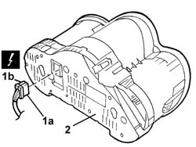

Procedures › 55 ELECTRICAL EQUIPMENT › 5560 INSTRUMENTS › 5560B ANALOGUE CONTROL PANEL › 5560B11 ANALOGUE CONTROL PANEL - R+R OR REPLACE 5560B11 ANALOGUE CONTROL PANEL - R+R OR REPLACE
Path Procedures > 55 ELECTRICAL EQUIPMENT > 5560 INSTRUMENTS > 5560B ANALOGUE CONTROL PANEL > 5560B11 ANALOGUE CONTROL PANEL - R+R OR REPLACE
Kind repair procedure (removal / refitting; the operation number is the code)
Applies to all engines; all production periods
Interactive page https://sloeber94.github.io/elrnDB-aGt/en/#/125001707
Applies to: all engines; all production periods
1. Move the instrument panel slightly and disconnect the electrical connections (1a, 1b).
Name
Connector
1a
Instrument panel
See E50A INSTRUMENT PANEL ( FACIA )
Name
Connector
1b
Instrument panel
See E50B INSTRUMENT PANEL ( FACIA )
2. Recover the instrument panel.

Topics linked from this page (3)
Topics that link to this page (53) G10 NO ACOUSTIC WARNING FOR HANDBRAKE APPLIED WITH VEHICLE MOVING fault diagnosis table (symptom -> numbered test steps) · all engines; all production periods K01 REV COUNTER NOT WORKING fault diagnosis table (symptom -> numbered test steps) · all engines; all production periods K03 SPEEDOMETER NOT WORKING fault diagnosis table (symptom -> numbered test steps) · all engines; all production periods K05 MILOMETER NOT WORKING fault diagnosis table (symptom -> numbered test steps) · all engines; all production periods K09 DOORS OPEN CHECK WARNING LIGHT ON fault diagnosis table (symptom -> numbered test steps) · engines: 2.0 JTS, 3.2 V6, 1.9 JTD 16V; all production periods K10 DOORS OPEN CHECK NOT WORKING fault diagnosis table (symptom -> numbered test steps) · engines: 1.8 T.SPARK; all production periods K15 CLOCK NOT WORKING fault diagnosis table (symptom -> numbered test steps) · all engines; all production periods K20 FUEL LEVEL GAUGE NOT WORKING fault diagnosis table (symptom -> numbered test steps) · all engines; all production periods K21 FUEL RESERVE WARNING LIGHT NOT WORKING fault diagnosis table (symptom -> numbered test steps) · all engines; all production periods K25 ENGINE COOLANT TEMPERATURE GAUGE NOT WORKING fault diagnosis table (symptom -> numbered test steps) · all engines; all production periods K26 ENGINE COOLANT OVERHEATING WARNING LIGHT NOT WORKING fault diagnosis table (symptom -> numbered test steps) · all engines; all production periods K27 ENGINE COOLANT OVERHEATING SIGNALLED BY THE INSTRUMENT fault diagnosis table (symptom -> numbered test steps) · engines: 2.0 JTS, 3.2 V6, 1.9 JTD 16V; all production periods K33 DOORS OPEN CHECK WARNING LIGHT ON fault diagnosis table (symptom -> numbered test steps) · engines: 2.0 JTS, 3.2 V6, 1.9 JTD 16V; all production periods K47 MILOMETER/TRIP METER FLASHING fault diagnosis table (symptom -> numbered test steps) · engines: 2.0 JTS, 3.2 V6, 1.9 JTD 16V; all production periods K60 ABS FAILURE WARNING LIGHT ON fault diagnosis table (symptom -> numbered test steps) · all engines; all production periods K61 ABS WARNING LIGHT OFF / (DO NOT CARRY OUT INITIAL TEST) fault diagnosis table (symptom -> numbered test steps) · engines: 2.0 JTS, 3.2 V6, 1.9 JTD 16V; all production periods K62 ABS AND HANDBRAKE WARNING LIGHTS BOTH ON fault diagnosis table (symptom -> numbered test steps) · engines: 2.0 JTS, 3.2 V6, 1.9 JTD 16V; all production periods K66 WARNING LIGHT SIGNALLING HANDBRAKE APPLIED DOES NOT COME ON fault diagnosis table (symptom -> numbered test steps) · engines: 2.0 JTS, 3.2 V6, 1.9 JTD 16V; all production periods K67 VDC WARNING LIGHT ON CONTROL PANEL ON fault diagnosis table (symptom -> numbered test steps) · engines: 2.0 JTS, 3.2 V6, 1.9 JTD 16V; all production periods K72 HANDBRAKE APPLIED WARNING LIGHT fault diagnosis table (symptom -> numbered test steps) · engines: 2.0 JTS, 3.2 V6, 1.9 JTD 16V; all production periods K73 SEAT BELT UNFASTENED WARNING LIGHT ON fault diagnosis table (symptom -> numbered test steps) · engines: 2.0 JTS, 3.2 V6, 1.9 JTD 16V; all production periods K81 AIRBAG WARNING LIGHT OFF / (DO NOT CARRY OUT INITIAL TEST) fault diagnosis table (symptom -> numbered test steps) · engines: 2.0 JTS, 3.2 V6, 1.9 JTD 16V; all production periods K82 PASSENGER AIR BAG DISABLED WARNING LIGHT fault diagnosis table (symptom -> numbered test steps) · engines: 2.0 JTS, 3.2 V6, 1.9 JTD 16V; all production periods K83 PASSENGER AIR BAG DISABLEMENT WARNING LIGHT OFF / (DO NOT CARRY OUT INITIAL TEST) fault diagnosis table (symptom -> numbered test steps) · engines: 2.0 JTS, 3.2 V6, 1.9 JTD 16V; all production periods K90 INSTRUMENT LIGHTS / NOT WORKING fault diagnosis table (symptom -> numbered test steps) · all engines; all production periods K91 INSTRUMENT LIGHTS / LIGHTING DIMMER NOT WORKING fault diagnosis table (symptom -> numbered test steps) · all engines; all production periods K92 DISPLAY MODULE IS NOT WORKING fault diagnosis table (symptom -> numbered test steps) · engines: 2.0 JTS, 3.2 V6, 1.9 JTD 16V; all production periods K95 WARNING LIGHT SYMBOLS DO NOT COME ON / (IN INSTRUMENT PANEL) fault diagnosis table (symptom -> numbered test steps) · all engines; all production periods K100 MIL WARNING LIGHT DOES NOT WORK fault diagnosis table (symptom -> numbered test steps) · engines: 2.0 JTS, 3.2 V6, 1.9 JTD 16V; all production periods K101 M.I.L WARNING LIGHT STAYS ON / ENGINE STARTS fault diagnosis table (symptom -> numbered test steps) · engines: 2.0 JTS, 3.2 V6, 1.9 JTD 16V; all production periods K102 DISPLAY MODULE NO SIGNAL - TO CHECK PANEL fault diagnosis table (symptom -> numbered test steps) · engines: 2.0 JTS, 3.2 V6, 1.9 JTD 16V; all production periods K123 WATER IN DIESEL FILTER WARNING LIGHT ON CONSTANTLY fault diagnosis table (symptom -> numbered test steps) · engines: 2.0 JTS, 3.2 V6, 1.9 JTD 16V; all production periods K124 HEATER PLUGS WARNING LIGHT ON CONSTANTLY fault diagnosis table (symptom -> numbered test steps) · engines: 2.0 JTS, 3.2 V6, 1.9 JTD 16V; all production periods K125 DISPLAY DOES NOT SHOW RANGE ON TRIP MODULE fault diagnosis table (symptom -> numbered test steps) · engines: 2.0 JTS, 3.2 V6, 1.9 JTD 16V; all production periods K126 DISPLAY DOES NOT SHOW AVERAGE SPEED' ON TRIP MODULE fault diagnosis table (symptom -> numbered test steps) · engines: 2.0 JTS, 3.2 V6, 1.9 JTD 16V; all production periods K127 DISPLAY DOES NOT SHOW JOURNEY TIME ON TRIP MODULE fault diagnosis table (symptom -> numbered test steps) · engines: 2.0 JTS, 3.2 V6, 1.9 JTD 16V; all production periods K140 FUEL RESERVE WARNING LIGHT ON CONSTANTLY fault diagnosis table (symptom -> numbered test steps) · engines: 2.0 JTS, 3.2 V6, 1.9 JTD 16V; all production periods K142 RECHARGING WARNING LIGHT ON CONSTANTLY fault diagnosis table (symptom -> numbered test steps) · engines: 2.0 JTS, 3.2 V6, 1.9 JTD 16V; all production periods K143 ONE WARNING LIGHT ACTIVATED BY STEERING COLUMN SWITCH UNIT NOT WORKING fault diagnosis table (symptom -> numbered test steps) · engines: 2.0 JTS, 3.2 V6, 1.9 JTD 16V; all production periods K144 ONE WARNING LIGHT ACTIVATED BY STEERING COLUMN SWITCH UNIT ON CONSTANTLY fault diagnosis table (symptom -> numbered test steps) · engines: 2.0 JTS, 3.2 V6, 1.9 JTD 16V; all production periods P30 DOORS / BOOT OPEN BUZZER NOT PRESENT WITH CAR IN MOTION fault diagnosis table (symptom -> numbered test steps) · all engines; all production periods S61 DASHBOARD CREAKING fault diagnosis table (symptom -> numbered test steps) · all engines; all production periods 5040A80 EXPANSION/CONNECTION PIPE - R R repair procedure (removal / refitting; the operation number is the code) · engines: 2.0 JTS, 3.2 V6, 1.9 JTD 16V; all production periods 5040B30 EXPANSION VALVE (TUBE ORIFICE) - R+R repair procedure (removal / refitting; the operation number is the code) · engines: 2.0 JTS, 3.2 V6, 1.9 JTD 16V; all production periods 5040C50 AIR CONDITIONER HEATER RADIATOR - R+R repair procedure (removal / refitting; the operation number is the code) · engines: 2.0 JTS, 3.2 V6, 1.9 JTD 16V; all production periods 5040C64 A/C MANUAL CONTROL SWITCH (ONE) - R+R repair procedure (removal / refitting; the operation number is the code) · engines: 2.0 JTS, 3.2 V6, 1.9 JTD 16V; all production periods 5040D76 AIR CONTITIONER DISTRIBUTION FLAP CONTROL MOTOR - R R repair procedure (removal / refitting; the operation number is the code) · engines: 2.0 JTS, 3.2 V6, 1.9 JTD 16V; all production periods 5040D84 AIR CONDITIONER LEFT HAND AIR MIXER FLAP CONTROL MOTOR - R R repair procedure (removal / refitting; the operation number is the code) · engines: 2.0 JTS, 3.2 V6, 1.9 JTD 16V; all production periods 5040D86 AIR CONDITIONER RIGHT HAND AIR MIXER FLAP CONTROL MOTOR - R R repair procedure (removal / refitting; the operation number is the code) · engines: 2.0 JTS, 3.2 V6, 1.9 JTD 16V; all production periods 5040D90 AIR CONDITIONER SYSTEM WIRING BUNDLE - R R repair procedure (removal / refitting; the operation number is the code) · engines: 2.0 JTS, 3.2 V6, 1.9 JTD 16V; all production periods 5505C34 INTERGRATED INSTRUMENT UNDER FACIA FRONT AIR BAG WIRING - R R repair procedure (removal / refitting; the operation number is the code) · all engines; all production periods 7040A10 L/H OR R/H FRONT SEAT (ONE) - R+R repair procedure (removal / refitting; the operation number is the code) · all engines; all production periods 7040A97 FACIA TRIM SUPPORT BEAM - R R repair procedure (removal / refitting; the operation number is the code) · all engines; all production periods
 Removing
Removing Refitting
Refitting